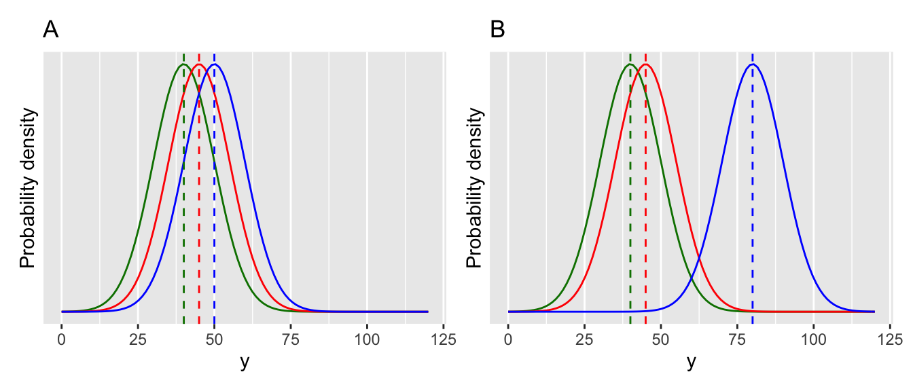

Chapter 11 Linear models with a single categorical explanatory variable
With the previous work on t-tests (and also with randomisation tests), you are now equipped to test for differences between two groups, or between one group and some fixed value. But what if there are more than two groups?
The answer is to use a one-way analysis of variance (ANOVA). Conceptually, this works the same way as a t-test.
11.1 One-way ANOVA
The one-way ANOVA is illustrated below with two cases (Figure ). In both cases there are three groups. These could represent treatment groups in an experiment (e.g. different fertiliser addition to plants). In figure A, the three groups are very close, and the means are not significantly different from each other. In figure B, there is one group that stands apart from the others. The ANOVA will tell us whether at least one of the groups is different from the others.

After figuring out if at least one of the groups is significantly different from the others it is often enough to examine plots (or summary statistics) to see where the differences are (e.g. which group(s) are different from each other). In other cases it might be necessary to do follow up post-hoc multiple comparison tests. We will come to those later.
11.2 Fitting an ANOVA in R
New coffee machines use “pods” to make espresso. These have become much more popular than the traditional “bar machines”. This data looks at the amount of “crema” or foam produced (a sign of quality!) using three methods: bar machines (BM), Hyper Espresso Pods (HIP) and Illy Espresso System (IES). Are any of these methods better than the others?
Remember to load the dplyr, magrittr and ggplot packages, and to set your working directory correctly.
Import the data and look at it.
espresso <- read.csv("CourseData/espresso.csv", stringsAsFactors = TRUE)
head(espresso)## foamIndx method
## 1 36.64 BM
## 2 39.65 BM
## 3 37.74 BM
## 4 35.96 BM
## 5 38.52 BM
## 6 21.02 BM(ggplot(espresso,aes(x=method,y=foamIndx)) +
geom_boxplot()+
geom_jitter(width=0.2))Figure 11.1: A box and whisker plot, with jittered points, for the espresso foam data.
You can see that the categorical explanatory variable (“method”) defines the three treatment groups and has the three levels representing the different coffee types: BM, HIP and IES.
Let’s first fit the ANOVA using R. One way ANOVAs are fitted using the lm function (lm stands for “linear model” - yes, an ANOVA is a type of linear model).
foam_mod <- lm(foamIndx ~ method, data = espresso)Before proceeding, we need to check the assumptions of the model. This can be done visually using the autoplot function in the ggfortify package. If you don’t have the package installed, install it now (install.packages("ggfortify")).
library(ggfortify)
autoplot(foam_mod)Figure 11.2: Diagnostic plots for the ANOVA model. This looks great.
The main thing to look at here in Figure is the “Q-Q” plot on the top right. We want those points to be approximately along the line. If that is the case, then it tells us that the model’s residuals are normally distributed (this is one of the assumptions of ANOVA). We may cover these diagnostic plots more thoroughly later. You can find more details on pages 112-113 of the Beckerman et al textbook, or at the following if you are interested: https://data.library.virginia.edu/diagnostic-plots/.
Trust me, everything here looks great.
Now let’s evaluate our ANOVA model. We do this using two functions: anova and summary (it sounds strange, but yes we do use a function called anova on our ANOVA model).
First, the anova. This gives us the following summary:
anova(foam_mod)## Analysis of Variance Table
##
## Response: foamIndx
## Df Sum Sq Mean Sq F value Pr(>F)
## method 2 4065.2 2032.59 28.413 4.699e-07 ***
## Residuals 24 1716.9 71.54
## ---
## Signif. codes: 0 '***' 0.001 '**' 0.01 '*' 0.05 '.' 0.1 ' ' 1This gives some numbers (degrees of freedom, sum of squares, mean squares). These are the important values that go into calculating an F value (also called an F-statistic). We will not worry about these details now, except to say that large F-statistics mean that we are more certain that there is a difference between the groups (and that the p-value is smaller).
In this case, the F-value is 28.413.
As with the t-test, R compares this value to a theoretical distribution (a “table”), based on two degrees of freedom. The first one is number of groups minus one, i.e. 2.000 in this case. The second one is the overall sample size, minus the number of groups, i.e. 24.000, in this case.
This results in a p-value of 0.0000004699 (very highly significant!).
Based on this p-value we can reject the null hypothesis that there is no difference between groups. We might report this simple result like this:
The foam index varied significantly among groups (ANOVA: F = 28.413, d.f. = 2 and 24, p = 0.000).
11.2.1 Where are the differences?
This model output doesn’t tell us where those differences are, nor does it tell us what the estimated mean values of foaminess are for the three groups: what are the effects? We need to dig further into the model to get to these details.
There are several ways to do this and we’ll look at one of them.
We do this using the summary function.
summary(foam_mod)##
## Call:
## lm(formula = foamIndx ~ method, data = espresso)
##
## Residuals:
## Min 1Q Median 3Q Max
## -14.62 -6.60 0.41 5.73 16.49
##
## Coefficients:
## Estimate Std. Error t value Pr(>|t|)
## (Intercept) 32.400 2.819 11.492 3.04e-11 ***
## methodHIP 28.900 3.987 7.248 1.73e-07 ***
## methodIES 7.300 3.987 1.831 0.0796 .
## ---
## Signif. codes: 0 '***' 0.001 '**' 0.01 '*' 0.05 '.' 0.1 ' ' 1
##
## Residual standard error: 8.458 on 24 degrees of freedom
## Multiple R-squared: 0.7031, Adjusted R-squared: 0.6783
## F-statistic: 28.41 on 2 and 24 DF, p-value: 4.699e-07To properly interpret this output you need to understand something called “treatment contrasts”. Essentially, contrasts define how model coefficients (the estimates made by the model) are presented in R outputs.
They are a bit hard to wrap your head aroudn and I STRONGLY recommend that you always do this with reference to a plot of the actual data, and the mean values for your groups. To do this you can use group_by and summarise to calculate the means for your the levels of your explanatory variable.
espresso %>%
group_by(method) %>%
summarise(gp_mean = mean(foamIndx))## # A tibble: 3 x 2
## method gp_mean
## <fct> <dbl>
## 1 BM 32.4
## 2 HIP 61.3
## 3 IES 39.7Look at the coefficients of the model. Remember that you have three levels in your explanatory variable, but only two levels are shown in the summary. Which one is missing?
The “missing” group is the first one alphabetically (i.e. BM). The estimate (of the mean) for this group is labelled “(Intercept)” (with a value of 32.4. This is like a baseline or reference value, and the estimates for the other groups (HIP and IES), are differences between this baseline value and the estimated mean for those groups. In other words, the second group (HIP) is 28.9 more than 32.4 (32.4 + 28.9 = 61.3). Similarly, the third group (IES) is 7.3 more than 32.4 (32.4 + 7.3 = 39.7). Compare these values with the ones you got above using summarise - they should be the same.
This is illustrated below in Figure A. You can see that the coefficients of the model are the same as the lengths of the arrows that run from 0 (for the first level of method (BM), the Intercept) or from this reference value. It is often a good idea to sketch something like this on paper when you are trying to understand your model outputs!
Likewise, the t-values and p-values, are evaluating differences between the focal group and this baseline. Thus in this case, the comparisons (the “contrasts”) are between the intercept (BM) and the second level (HIP), and the intercept (BM) and the third level (IES). There is no formal statistical comparison between HIP and IES.
You can see that it is very important to understand the levels of your explanatory variable, and how these relate to the summary outputs of the model. It can be useful to use the function relevel to manipulate the explanatory variable to make sure that the output gives you the comparisons you are interested in. Another simple trick would be to always ensure that your reference group (e.g. “control”) comes first alphabetically and is therefore selected by R as the intercept (reference point).
For example, we can relevel the method variable so that the levels are re-ordered as HIP, BM, then IES so that the comparisons are between zero-HIP, HIP-BM and HIP-IES. (make sure that you understand this before proceeding).
#This is what the original data looks like:
levels(espresso$method)## [1] "BM" "HIP" "IES"#releveling changes this by changing the reference.
espresso_2 <- espresso %>%
mutate(method = relevel(method,ref = "HIP"))
levels(espresso_2$method)## [1] "HIP" "BM" "IES"Now we can refit the model with this modified data set and see what difference that made:
foam_mod2 <- lm(foamIndx ~ method, data = espresso_2)
anova(foam_mod2)## Analysis of Variance Table
##
## Response: foamIndx
## Df Sum Sq Mean Sq F value Pr(>F)
## method 2 4065.2 2032.59 28.413 4.699e-07 ***
## Residuals 24 1716.9 71.54
## ---
## Signif. codes: 0 '***' 0.001 '**' 0.01 '*' 0.05 '.' 0.1 ' ' 1summary(foam_mod2)##
## Call:
## lm(formula = foamIndx ~ method, data = espresso_2)
##
## Residuals:
## Min 1Q Median 3Q Max
## -14.62 -6.60 0.41 5.73 16.49
##
## Coefficients:
## Estimate Std. Error t value Pr(>|t|)
## (Intercept) 61.300 2.819 21.743 < 2e-16 ***
## methodBM -28.900 3.987 -7.248 1.73e-07 ***
## methodIES -21.600 3.987 -5.417 1.45e-05 ***
## ---
## Signif. codes: 0 '***' 0.001 '**' 0.01 '*' 0.05 '.' 0.1 ' ' 1
##
## Residual standard error: 8.458 on 24 degrees of freedom
## Multiple R-squared: 0.7031, Adjusted R-squared: 0.6783
## F-statistic: 28.41 on 2 and 24 DF, p-value: 4.699e-07Now the coefficients in the model summary look different, but the model is actually the same. Compare the two graphs in Figure - can you see the differences/similarities?

Figure 11.3: Comparison illustrating the difference between ANOVA models using (A) BM and (B) HIP as references in the espresso foam data set.
So, from the first of the model outputs above you can say that BM is significantly different than HIP (t= 7.248, p < 0.0001), but that BM is not significantly different from IES (t = 1.831, p = 0.0796). Then, from the second one you can see that HIP is significantly different from IES (t=-5.417, p < 0.0001). You could write this into the main text, include the information in a figure caption (i.e. add it to Figure .
e.g. The foam index varied significantly among groups (ANOVA: F = 28.413, d.f. = 2 and 24, p = 0.000). The pairwise comparisons in the ANOVA model showed that means of BM and HIP were significantly different (t= 7.248, p < 0.0001), as were those of HIP and IES (t=-5.417, p < 0.0001), but the BM-IES comparison showed no significant difference (t= 1.831, p= 0.0796).
11.2.2 Tukey’s Honestly Significant Difference (HSD)
An alternative way to approach these comparisons between groups is to use something called a post-hoc multiple comparison test. The words “post-hoc” mean “after the event” – i.e. after the ANOVA in this case – while the “multiple comparison” refers to the (potentially many) pairwise comparisons that you would like to make with an ANOVA. One of the most widely used post-hoc tests is called Tukey’s Honestly Significant Difference (Tukey HSD) test. There is a convenient R package called agricolae that will do these for you.
#You only need to do this once!
install.packages("agricolae")When you have the package installed, you can load it (using library). Then you can run the Tukey HSD test using the function HSD.test. The first argument for the function is the name of the model, followed by the name of the variable you are comparing (in this case method) and finally console = TRUE tells the function to print the output to your computer screen.
library(agricolae)
HSD.test(foam_mod2, "method", console=TRUE)##
## Study: foam_mod2 ~ "method"
##
## HSD Test for foamIndx
##
## Mean Square Error: 71.5383
##
## method, means
##
## foamIndx std r Min Max
## BM 32.4 7.300060 9 21.02 39.65
## HIP 61.3 10.100604 9 46.68 73.19
## IES 39.7 7.700768 9 32.68 56.19
##
## Alpha: 0.05 ; DF Error: 24
## Critical Value of Studentized Range: 3.531697
##
## Minimun Significant Difference: 9.957069
##
## Treatments with the same letter are not significantly different.
##
## foamIndx groups
## HIP 61.3 a
## IES 39.7 b
## BM 32.4 bThe output is long-winded, and the main thing to look at is the part at the end. The key to understanding this is actually written in the output, “Treatments with the same letter are not significantly different”.
You could include these in a figure or a table with text like, “Means followed by the same letter did not differ significantly (Tukey HSD test, p>0.05)”.
11.3 ANOVA calculation “by hand”.
The following is an optional exercise designed to help you understand how ANOVA works.
The ANOVA calculation involves calculating something called an F-value or F-statistic (the F stands for Fisher, who invented ANOVA). This is similar to the t-statistic in that it is a ratio between two quantities, in this case variances. In ANOVA, the F-statistic is calculated as the treatment variance divided by the error variance.
What does that mean? Let’s consider the espresso data set again.
In the Figure , you can see on the left (A) the black horizontal line which is the overall mean foam index. The vertical lines are the “errors” or departures from the overall mean value, colour coded by treatment (i.e. method). These can be quantified by summing up their square values (squaring ensures that the summed values are all positive). We call this quantity the Total Sum of Squares (SSTotal). If there is a lot of variation, the sum of squares will be large, if there is little variation the sum of squares will be small.
On the right hand side (Figure B) we see the same data points. However, this time the horizontal lines represent the treatment-specific mean values, and the vertical lines illustrate the errors from these mean values. Again we can sum up these as sum of squares, which we call the Error Sum of Squares (SSError).
The difference between those values is called the Treatment Sum of Squares (SSTreatment) and is the key to ANOVA - it represents the importance of the treatment: \[SSTreatment = SSTotal - SSError\].
If that doesn’t make sense yet, picture the case where the treatment-specific means are all very similar, and are therefore very close to the overall mean. Now the difference between the Total Sum of Squares and the Error Sum of Squares will be small. Sketch out a couple of examples with pen on paper if that helps. You should now see that you can investigate differences among means by looking at variation.
Figure 11.4: The relative size of the squared residual errors from the overall mean (SSTotal) (A) and from the treatment-specific means (SSError) (B) tell us about the importance of the treatment variable. The difference between the two values is the “treatment sum of squares”.
In the following I will show how these calculations can be done “by hand” in R. The purpose of showing you this is to demonstrate exactly how the lm model that you fitted above works, and prove to yourself that it is not rocket science… you will never need to do this in real life, because you have the wonderful lm function.
Here goes…
First, calculate the total sum of squares:
(SSTotal = sum((overallMean-espresso$foamIndx)^2))## [1] 5782.099Now calculate the group-specific means:
(groupMeans<-espresso %>%
group_by(method) %>%
summarise(groupMean = mean(foamIndx)) %>%
pull(groupMean))## [1] 32.4 61.3 39.7Now add those group-specific mean values to the dataset using left_join so that you can calculate the group-specific errors.
espresso <- left_join(espresso,espresso %>%
group_by(method) %>%
summarise(groupMean = mean(foamIndx))) %>%
mutate(groupSS = (foamIndx - groupMean)^2)
head(espresso)## foamIndx method groupMean groupSS
## 1 36.64 BM 32.4 17.9776
## 2 39.65 BM 32.4 52.5625
## 3 37.74 BM 32.4 28.5156
## 4 35.96 BM 32.4 12.6736
## 5 38.52 BM 32.4 37.4544
## 6 21.02 BM 32.4 129.5044Then, to calculate the errors:
(SSError <- espresso %>%
summarise(sum(groupSS)) %>%
pull())## [1] 1716.919From there, you can calculate the Treatment Sum of Squares
(SSTreatment <- SSTotal - SSError)## [1] 4065.18So far, so good - but we can’t just look at the ratio of SSTreatment/SSError, because sum of square errors always increase with sample size. We can account for this by dividing
We need to take account of sample size (degrees of freedom) by dividing these sum of squares by the degrees of freedom to give us variances. There are 3 treatment groups and 9 samples per group. Therefore there are 2 degrees of freedom for the treatment, and 8 degrees of freedom per each of the three treatments, giving a total of 8*3 = 24 error degrees of freedom.
Now we need to correct for degrees of freedom, which will give us variances.
(meanSSTreatment <- SSTreatment/2)## [1] 2032.59(meanSSError <- SSError/24)## [1] 71.5383The F-statistic is then the ratio of these values.
(Fstat <- meanSSTreatment/meanSSError)## [1] 28.41261We can “look up” the p-value associated with this F-statistic using the pf function (pf stands for probability of f) like this:
1-pf(Fstat,df1=2,df2=24)## [1] 4.698636e-07As you can see, the method is a bit laborious and time consuming but it is conceptually fairly straightforward - it all hinges on the ratio of variation due to treatment effect vs. overall variation. Signal and noise.
11.4 Exercise: Apple tree crop yield
An experiment was conducted to look at the effect of tree spacing on apple crop yield (total kg per tree of apples between 1975-1979) in different spacing conditions (i.e. distances between trees). There were 40 trees in each treatment group. The spacing was 6, 10 and 14 feet, and should be treated as a categorical variable. There may be some NA missing yield values.
Import the data (apples.csv) and analyse it using the techniques you have learned in the ANOVA lecture, and the previous chapter, to answer the question “What is the effect of tree spacing on apple yields?”
- Import and look at the data (e.g.
summaryorstrorhead)
- Ensure that the explanatory variable (
spacing) is defined as a categorical variable (i.e. a “factor”, in R-speak). You can usemutateandas.factorfunctions for this.
- Plot the data using
ggplot(a box plot with (optionally) added jittered points would be good).
- Fit an ANOVA model using
lm.
- Check the model using a diagnostic plot (i.e. using
autoplotfrom theggfortifypackage).
- Use
anovato get the ANOVA summary.
- You should see that there are differences among treatments. But where are those differences? Use
summaryon your model to find out.
- Use a Tukey test to make all the pairwise comparisons among the treatments.
Write a few sentences that summarise your findings. What biological processes do you think drive the effects that you have detected?
Optional. Instead of using a Tukey test, use the alternative “relevel” approach to make the missing comparison.
If you get this far, try using the ANOVA approach on one of the previous t-test examples (remember that ANOVA can be used when your single explanatory variable has TWO or more levels). You should notice that the results are the same whether you use the t.test function or the ANOVA approach with lm.